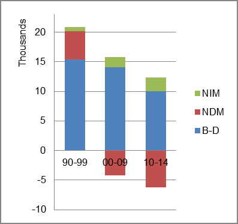
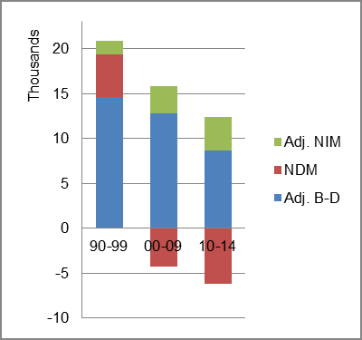

The foreign-born (FB) population increased from 8,058 in 1960 to 61,428 in 2010. That was an increase of 662.3 percent. The foreign-born share changed from 0.4 percent to 2.1 percent.
The share of the overall population that was native-born (NB) increased by 33.9 percent.
Mississippi: Population 1960-2010
The first chart below shows the three population change factors for three periods adjusted for annual average amounts. Natural change (B-D) was the dominant factor in population increase for all periods
The second chart shows the same data but with an adjustment to reflect births to immigrants shifted to NIM. In it, B-D remained the main source of added population in all periods.
Mississippi: Sources of Population Change 1990-2013 Mississippi: Sources of Population Change (Adjusted) 1990-2013  
B-D NDM NIM B-D NDM NIM 90-'99 73.5% 22.9% 3.5% 90-'99 70.0% 22.9% 7.1% 00-'09 88.8% neg. 11.2% 00-'09 82.8% neg. 17.2% 10-'13 82.7% neg. 17.3% 10-'13 73.3% neg. 26.7%